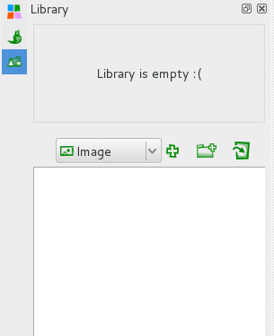
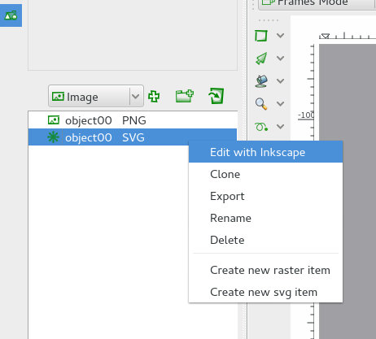

A Biblioteca do Tupi é uma ferramenta extremamente útil para gerir os recursos utilizados. Pode adicionar à Biblioteca os objetos nativos criados dentro do Tupi (clique em cima do objeto com o botão direito do rato) e importar objetos externos do tipo Raster e Vetorial. Estes objetos podem estar organizados dentro de pastas.
A importação não está limitada a objetos já existentes. Na realidade, se clicar com o BDR na Biblioteca, surge a opção entre Create New Raster Item e Create New SVG Item. Ao escolher uma destas opções, irá ser criado um novo item e é automaticamente lançada a respetiva aplicação externa de edição (GIMP, MyPaint e Krita para imagens raster e Inkscape para imagens vetoriais).
A integração de ferramentas externas (GIMP, MyPaint e Krita para imagens raster e Inkscape para imagens vetoriais) permite superar algumas limitações da Tupi. Através da Biblioteca (Library) é possível editar facilmente imagens raster/vetoriais em aplicações com funcionalidades de desenho e cores mais sofisticadas. Como é óbvio, estas funcionalidades não podem ser utilizadas diretamente nas imagens nativas (imagens criadas dentro do Tupi) mas pode exportar as imagens criadas no Tupi e voltar a importar.
